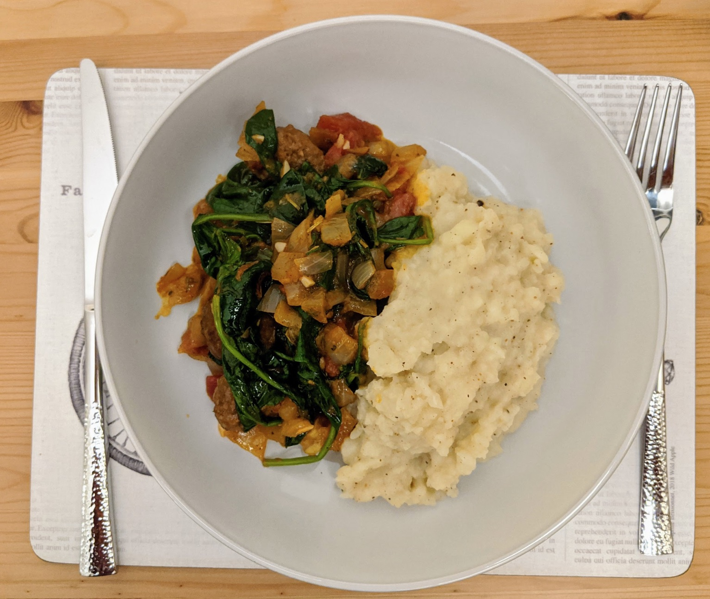

Meatballs and mash
Mmmmm...

Ingredients
- 24 meatballs (6 each)
- 2 onions
- 2 cloves of garlic
- 2 handfuls of cherry tomatoes (or tin of tomatoes)
- 1 bay leaf
- Small bunch of fresh sage (if available)
- 1 chilli (pierce to release flavour)
- 4 medium potatoes
- A dollop of butter
- A dash of milk
- 1 tsp nutmeg (heaped)
- Spinach (~150g)
Instructions
Main dish
- Fry meatballs to seal them nicely.
- Add the onion and crush the garlic, allowing them to fry for a few minutes.
If using the bay leaf, sage, and/or chilli, add it now.
- Pour in some red wine and let it evaporate for a minute.
- Add tomatoes and allow to simmer.
Season to taste.
Mash
- Peel and boil the potatoes (chop them up to help them boil quicker if you like).
- Mash them with the milk and butter, adding salt, pepper, and nutmeg as desired.
- Add the spinach to wilt with the meatballs, then serve.
Serves 4.